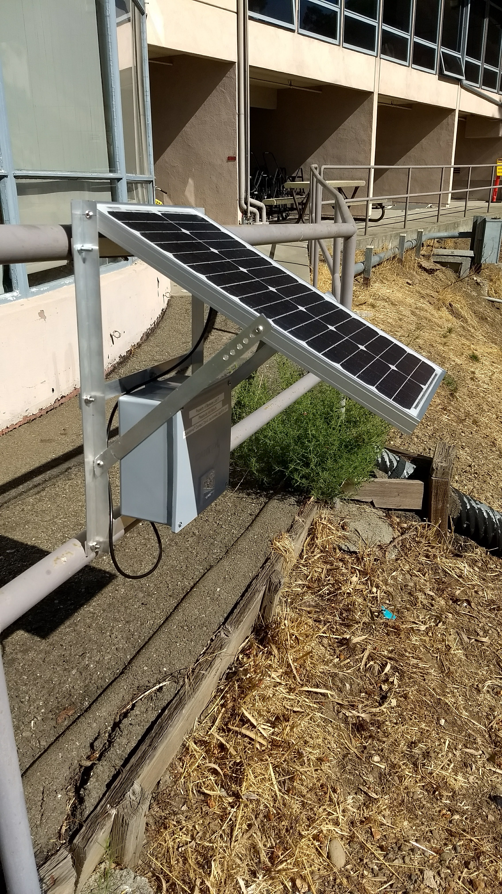

Welcome to the TurkeyCam Server!
This is a demonstration platform for showing how remote sensors can be deployed, their data aggregated, operated on, and presented. In this case, the sensors are cameras deployed around LBL. The cameras are based around the Raspberry Pi platform and are mounted outdoors. Power comes from a battery which is maintained by solar panels. Network connectivity is via open (visitor) WiFi.
The cameras take a photo every few seconds and compare it to the previous photo taken. If the photos are "different" enough, the new photo is sent to the server for analysis via a simple protocol over https. The server, in turns, runs a machine learning algorithm on the images to identify their contents. The ML model itself is called Rekognitionand is provided by Amazon AWS. When images are determine to contains turkeys, they are stored for your enjoyment. The server also hosts this webpage.
This was put together by the IT User Support Group in the IT Division. If you are interested in remote sensor deployment and the use of AWS compute services, reach out to us!